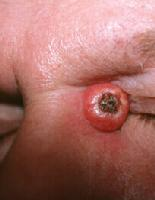
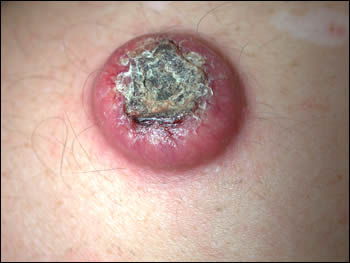

Keratoacanthoma (KA)
* Định nghĩa:
+ U tế bào sừng

* Đặc điểm:
+ KA: là u ác tính biệt hóa tốt hay gặp mà nguồn gốc bệnh là từ những tuyến pilodebaceous và gần giống về mặt bệnh học của ung thử biểu mô tế bào vảy (Squamous cell carcinoma = SCC). KA điển hình với phát triển nhanh từ vài tuần đến vài tháng. KA mặc dù hiếm xấm lấn hay trở thành ung thư di căn nhưng chủ trương phẫu thuật cắt bỏ thường được sử dụng.
+ Về bệnh học: cả hai yếu tố gây ung thư là ánh sáng mặt trời và hóa chất được cho là nhân tố bệnh học trong sự phát triển khối u. Chấn thương, virus papilloma người, yếu tố gen, và tình trạng tổn thương hệ miễn dịch cũng được cho yếu tố gây bệnh
+ Tần suất bệnh: ở Mỹ nghiên cứu trên số người da trắng 104/100000 dân. KA/SCC=1/3. Người da đen ít gặp bệnh lý này.
+ Tỷ lệ tử vong: KA được tin là có tiên lượng tốt, tuy nhiên gần đây sự phân chia lại về SCC-KA cho thấy sự khó khăn trong phân biệt về mô học cũng như sự không thường gặp nhưng tiềm ẩn xâm lấn tự nhiên của KA. Nó có thể đa ổ, có thể lớn (5-15cm) xâm lấn tại chổ, hiếm có di căn.
+Về giới tính: Nam/nữ = 2/1
+ Tuổi: KA được báo cáo gặp trong các nhóm tuổi khác nhau, nhưng tần suât gia tăng theo tuổi. Hiếm gặp ở người trẻ hơn 20 tuổi.
+ Bệnh được chẩn đoán phân biệt với những bệnh sau:
- Sừng hóa do quang học
- Sừng da (Cutaneous Horn)
- Ung thư biểu mô tế bào Merkel
- Ung thư biểu mô di căn da
- Molluscum Contagiosum
- Muir-Torre Syndrome
- Prurigo Nodularis
- Sporotrichosis
- Ung thử biểu mô tế bào vảy
- Verrucous Carcinoma
* Hình ảnh lâm sàng:

* Điều trị:
Phẫu thuật là chọn lựa đầu tiên, tuy nhiên một số bệnh nhân không thể phẫu thuật như có nhiều ổ KA bất lợi cho phẫu thuật vì thế có thể điều trị nội khoa. Retinoids toàn thân như: Isotretinoin được cân nhắc điều trị cho những bệnh nhân với tổn thương quá số lượng điều trị phẫu thuật. Methotrexate, 5-fluorouracil, bleomycin và steroids trong tổn thương đã được dùng đạt thành công ở những bệnh nhân hoặc cơ thể không chịu nổi cuộc phẫu thuật hoặc tổn thương không nằm trong chỉ định phẫu thuật bởi vì vị trí hay kích thước. Cả hai loại tại chổ Imiquimod và 5FU được sử dụng thành công rõ.